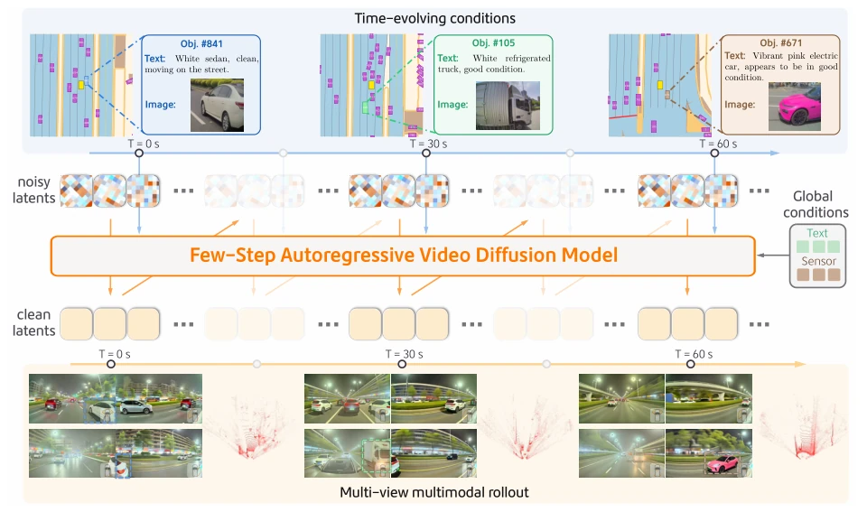
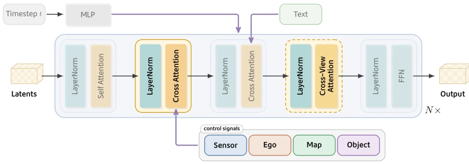
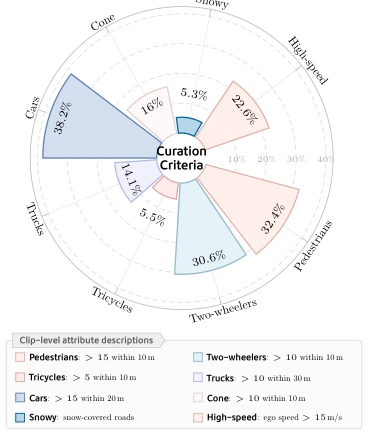
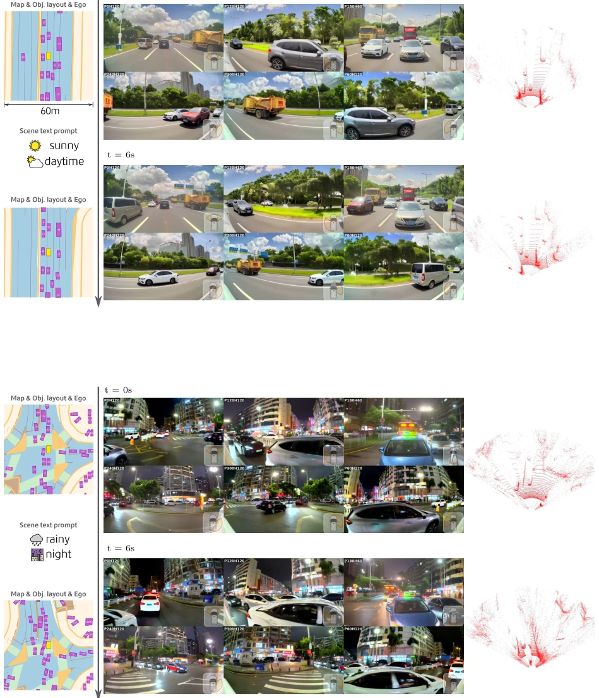
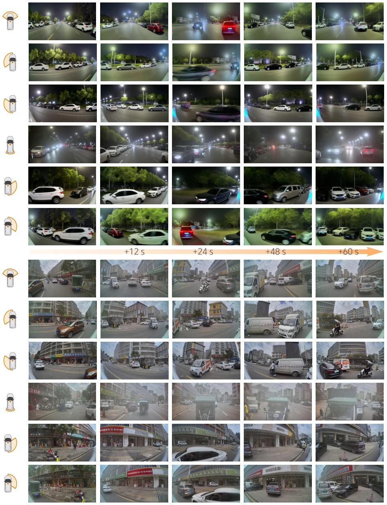
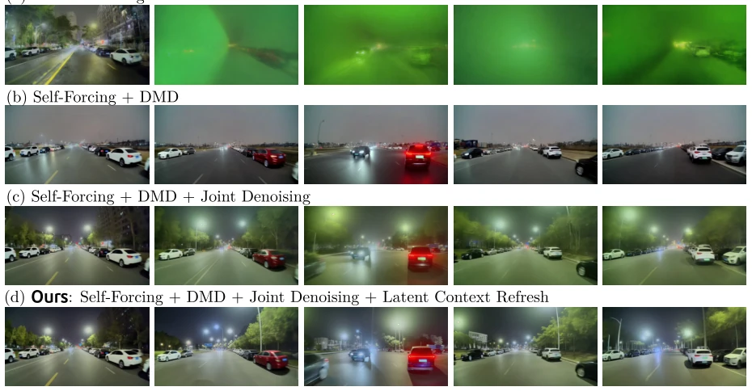

M4World attempts to unify multi-view video and LiDAR generation using DiT and enables fine-grained control over object appearance, which sounds promising. However, achieving 2.3 FPS on 8 A100 GPUs is somewhat slow for real-time simulation, and although long-term generation reaches 60 seconds, cumulative errors are inevitable given it is only 4-step denoising. Although VLM evaluation is automated, VLMs themselves are prone to hallucinations, raising doubts about the evaluation's accuracy. Nevertheless, employing LoRA for fine-tuning on long-tail scenarios is indeed beneficial for data augmentation, offering a new approach for autonomous driving simulation plagued by long-tail data scarcity, though whether the computational cost justifies large-scale deployment remains to be considered. Its multimodal generation capability does improve FID/FVD metrics, but generalization under extreme long-tail scenarios requires further verification.
Existing reconstruction-based simulators (e.g., NeRF, 3DGS) have limited coverage and cannot generate unseen viewpoints [23, 29]. Generative models (e.g., MagicDrive [11]) can generate openly, but object control mostly remains at geometric bounding boxes, lacking appearance attribute control [13, 52]. Long-tail scenario construction often relies on the first frame, with subsequent evolution going out of control [33, 44]. Furthermore, causal streaming inference is often affected by train-test bias, resulting in poor long-term stability [11, 35]. Autonomous driving simulation requires models capable of generating unseen scenes while precisely controlling object appearance and dynamics; existing methods exhibit significant gaps in controllability and long-term stability. Particularly for safety-critical scenarios, controlling only position is insufficient to construct realistic hazardous conditions.

Figure 1 M4World is a few-step autoregressive video diffusion world model for controllable driving simula- tion. Conditioned on time-evolving control signals as well as global scene and sensor context, it progressively denoises streaming latent chunks and jointly rolls out synchronized multi-view camera videos and LiDAR observations over long horizons, enabling fine-grained object-level control with stable cross-view consistency.
方法Method
核心架构基于共享 DiT 骨干，利用 Self-Attention 捕捉时空依赖，Cross-Attention 注入异构控制信号。训练采用五阶段渐进式策略：首先双向中期训练，利用全控制信号适应驾驶域；随后 Teacher Forcing 引入因果掩码，实现从离线到流式的过渡；接着用 ODE 初始化四步学生模型以降低延迟；再通过 Self-Forcing 和不对称 DMD 消除训练 - 测试分布差距；最后长视频迭代微调对齐长时上下文。物体控制 Token 设计独特，融合 3D 边界框、语义类别、图像描述及文本属性，实现空间与外观的双重控制。针对长尾场景，提出基于 LoRA 的少样本微调策略，平衡罕见样本与通用数据。此外，扩展了视觉参考条件生成变体，支持首帧多视角或单视角条件，以及物体补全任务，保持原有控制接口不变。LiDAR 模态通过 Range Map 编码，复用视频 VAE 实现多模态统一生成。
The core architecture is based on a shared DiT backbone, utilizing Self-Attention to capture spatiotemporal dependencies and Cross-Attention to inject heterogeneous control signals. Training employs a five-stage progressive strategy: first, bidirectional mid-term training utilizes full control signals to adapt to the driving domain; subsequently, Teacher Forcing introduces causal masks to achieve the transition from offline to streaming; next, ODE initializes a four-step student model to reduce latency; then, Self-Forcing and asymmetric DMD eliminate the train-test distribution gap; finally, long-video iterative fine-tuning aligns long-term context. The object control Token design is unique, fusing 3D bounding boxes, semantic categories, image descriptions, and text attributes to achieve dual control of space and appearance. For long-tail scenarios, a LoRA-based few-shot fine-tuning strategy is proposed to balance rare samples with general data. Additionally, visual reference condition generation variants are extended, supporting multi-view or single-view conditions for the first frame, as well as object completion tasks, while maintaining the original control interface unchanged. The LiDAR modality is encoded via Range Map, reusing the video VAE to achieve unified multimodal generation.

Figure 2 Architecture overview. The M4World model adopts a shared DiT backbone with two cross-attention pathways to integrate control signals and cross-sensor context, enabling unified multi-view and multimodal generation under heterogeneous driving conditions.

Figure 3 Distribution of curated training data across clip-level attributes. The po- lar bar chart reports the proportion of clips selected by each curation criterion, covering dense traffic participants, challenging weather, and high-speed ego motion.
The dataset contains 40,000 10-second and 60-second sequences, with 10 views + LiDAR. The baseline is MagicDrive-V2 [11]. FID/FVD improved (34.8/288.7 vs 41.7/346.1). VLM evaluation shows a significant improvement in object visual/text fidelity. 60-second generation is stable at 2.3 FPS. Long-tail data augmentation boosts target recall rate from 1% to 69.7%. The evaluation system includes scene-level, view-level object consistency, and cross-view consistency, comprehensively covering controllability dimensions. In the augmentation experiment for long-tail truck scenarios, synthetic data significantly improved the perception model's recall rate, demonstrating its practical value in data augmentation.

Figure 7 Qualitative results of multi-view and multimodal generation. From left to right, we show the input control signals, generated multi-camera streams, and the LiDAR scan at the synchronized timestamp.

Figure 9 Qualitative evaluation of long-horizon rollouts. We present key frames from 60-second driving videos generated in parallel across six views. The rollouts remain stable over long horizons, preserving coherent motion and visual appearance without catastrophic drift.
Figure 8 Qualitative evaluation of fine-grained object control. For each case, the left panel shows the input textual and visual descriptions for four objects near the ego vehicle. In the six-view generation results on the right, color-coded bounding boxes highlight the corresponding conditioned objects.

Figure 11 Visual ablation of key components in our long-horizon generation training recipe. Our full model maintains clearer scene structure and more stable visual quality throughout autoregressive rollout.